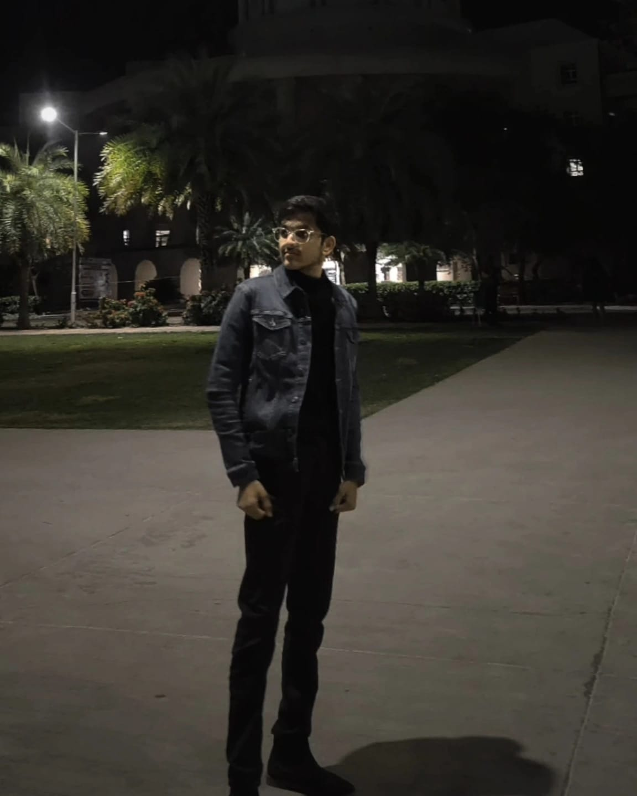

Utkarsh Pal

Summary
Passionate about web development and open source, eager to learn and contribute to real-world projects.
Education
- I did my Secondary and Senior Secondary Education from Lucknow Public Schools and Colleges.
- Currently pursuing Btech in CSE specialising in Data Science from Manipal University Jaipur
Achievements
- Lucknow Public College
April 2015 - July 2023
- Inter School Skating Competition Participant
- Inter School Basketball Competition Participant
- Inter House Solo Singing,Volleyball and Carrom WINNER
- Inter House Cricket,Football,Chess and Group Singing RUNNER
- Scored 86.2% in High School
- Manipal University Jaipur
September 2024 - 2028
- Participated in 3 hackathons and advanced to Round 2 in 2 of them.
- This was a year in which I explored a lot of domains and learned a lot of new things.
Skills
- Web Development
- HTML
- CSS
- Javascript
- Node.js
- Express.js
- Reactjs(ongoing)
- DSA
Projects
- TinDog Website – A Tinder-inspired landing page for dogs built with HTML, CSS, and Bootstrap.
- Dicee Game – A simple dice game using JavaScript DOM manipulation.
- Personal Website – Built a Personal Website using HTML, CSS and Javascript.
Awards and Certifications
- Web Development Course by Angela Yu - Soon to be completed
Others